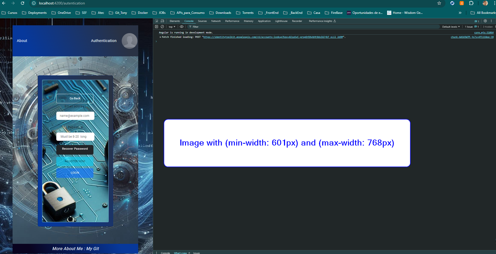

<div class="local-center">
  <div id="localUp" class="card">

    <div class="card-body">
      <h5 class="card-title">I going describe Myself</h5>
      <p class="card-title">
        This is Tony Filho I started my career as Angular Developer in 2020, now
        I am working as Junior Java and Mid-Level (Pleno) in Angular.
        I got 4 years in Angular. And 1 and half year and Java EE and SpringBoot.
        My goal in my career is to be a Specialist or (Tech Lead) in Angular and Java, I am focused in my goal.
        In the Backend, I choosed Java to be Specialist! In the FronEnd I choosed Angular.
       </p>
      <h5 class="card-title">About  Resume or CV</h5>
      <p class="card-text">
        In summary, in Angular 18, I used NxJS operators, signals, standalone components, lazy-loaded routes,
        AngularFire, Angular Material (Dialog and SnackBar service), CanActivateFn for /home and /authentication, regex with form validation, 
        for email and phone and free email providers, TypedFormsGroup, UntypedFormsGroup,  services with HTTP methods
        (POST, GET), models, interfaces, and TypeScript.

        I also used Firebase Authentication and Firebase Database (for uploading and downloading documents). For SCSS
        and CSS, I worked with media queries, flex containers, and grid containers. For deployment, I used automatic
        deploy through GitHub after each push. For smaller components, I used Bootstrap (e.g., for buttons and other
        elements).

      </p>
      <h5 class="card-title">English Skills</h5>
      <p class="card-text">
        I am B2 to speaking and B2 to hear.

      </p>

      <h5 class="card-title">About Java Developing</h5>
      <p class="card-text">

        In the Backend: I am Junior in Java with 18 months of experience. I will put my effort just in Java and
        Frameworks like Spring Boot. Anothers technologies that working together with Java i will get knowledge.
        About Java, it was 9 months with Java EE worked in manutence project, and the rest of my experience
        was in my free time I develop small project with Spring-Boot to pratice. <br>
        I have dont have a big experience with database. I know SQL, MySQL. I undestand how it working, I got a small
        experiency with Firebase.
        I know i need undestand anothers technology that working together with Java. <br> I have know how in Rest API,
        MicroServices, Git and Jira.
        I d`love to working with NoSQL, I got a small experiency with Firebase Database. In this project I am using
        Firebase
        Database, and Firebase Auth. It is a Serverless project.
      </p>
      <h5 class="card-title">About Angular Developing</h5>
      <p class="card-text">
        I am dedicated to creating dynamic and responsive user interfaces. With
        years of experience in front-end development, I have a deep
        understanding of Angular, one of the most powerful and hard JavaScript frameworks
        for building Single Page Applications (SPAs).
      </p>
      <h5 class="card-title">### Technical Specialties ####</h5>
      <p class="card-text">
        I am a passionate Angular, it is 4 years study and pratice. My expertise in Angular includes creating
        reusable components, managing complex states, and optimizing performance
        to ensure a smooth user experience. I am familiar with the latest
        versions of Angular as well as best development practices, including
        using RxJS for reactive programming and TypeScript.
      </p>
      <h5 class="card-title">### Test in Angular ####</h5>
      <p class="card-text">
        In all the Angular projects I participated in, I never developed code tests. All the projects I worked on had a
        testing team! My last business manager once told me, "What is the cost difference between an hour of an Angular
        developer and an hour of a tester?" Developing code tests in Angular is something I need to learn to apply in
        smaller projects. This is one of my goals in Angular, but I haven't had time yet.
      </p>
      <h5 class="card-title">### RXJS ####</h5>
      <p class="card-text">
        This is impossible to talk about Angular without to talk RXJS and Observable and another Operators, for me this
        is a most power library or tool to unsynchronized data. Is very hard to get knowledge, but after the knowledge,
        this
        step you can see so power is that library. For me is the best.
      </p>
      <h5 class="card-title">### Signals ####</h5>
      <p class="card-text">
        Now we talk about the new darling from Angular, the Signal(), if I could to comper Signal() between
        Observables(), it understand Signal() is more easy, but I prefer to use RXJS and Observables, but without
        prejudices, if I
        comper Signal() between some lifecycleshooks i prefer Signal().
      </p>
      <h5 class="card-title">#### Media Query ####</h5>
      <p class="card-text">
        I utilized in this SPA you can test it. I used media query to images and
        texts. Minimize this pages and you will see tI utilized in this SPA you
        can test it. I used media query to images and texts. Minimize this pages
        and you will see the website is responsive.
      </p>
      <h5 class="card-title">#### Flexbox ####</h5>
      <p class="card-text">
        I utilize Flexbox to build flexible and responsive layouts. With
        Flexbox, I can align and distribute elements on the page efficiently,
        ensuring that the design adapts to different screen sizes and devices.
        My understanding of Flexbox properties such as `justify-content`,
        `align-items`, and `flex-direction` allows me to create complex and
        consistent layouts.
      </p>
      <h5 class="card-title">#### CSS Grid ####</h5>
      <p class="card-text">
        is another powerful tool in my arsenal, enabling the creation of
        advanced two-dimensional layouts. With Grid, I can explicitly define
        rows and columns and control the precise placement of elements on the
        screen. My proficiency with Grid properties such as
        `grid-template-rows`, `grid-template-columns`, and `grid-area` empowers
        me to develop sophisticated designs that meet the specific needs of each
        project.
      </p>

      <h5 class="card-title">### Commitment to Excellence ####</h5>
      <p class="card-text">
        My commitment is always to deliver high-quality solutions that not only
        meet but exceed client expectations. By utilizing Angular in conjunction
        with Flexbox and CSS Grid, I develop interfaces that are not only
        visually appealing but also highly functional and accessible. If you are
        looking for a developer who combines technical knowledge with creativity
        and attention to detail, I am here to turn your ideas into reality.
      </p>
    </div>
    <div class="localUper">
      <a href="#" (click)="scrollToTop($event)">Up</a>
    </div>
    <div class="local-img">
      
      
      
      
      
      


    </div>


    <div class="localUper">
      <a href="#" (click)="scrollToTop($event)">Up</a>
    </div>
  </div>
</div>